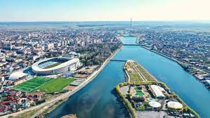
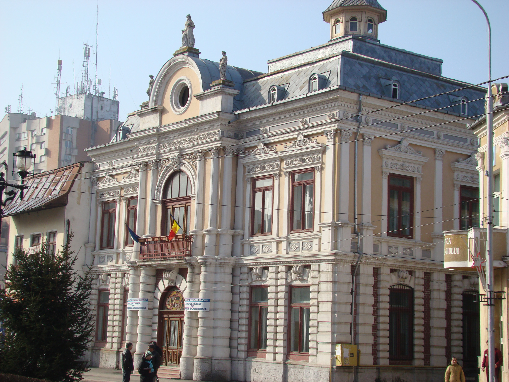
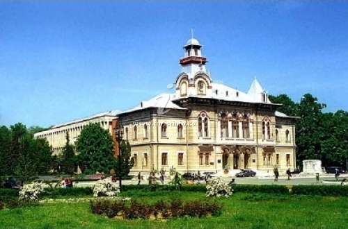

Like Erol Ozan said Some beautiful paths can’t be discovered without getting lost
,so, let's take a look at their opinions about the city.
- Alexandrina Iordache from Romania said:

- Târgu Jiu made a great impression on me. A chic, neat city with many beautifully cut green flowers and flowers, a city you love from the first moment. Perhaps the kindness of the inhabitants who traveled without haste also contributed to this, they offered you the information you needed and the car traffic was reduced. I took a tour of the city and tried to discover and visit, in the few hours I had at my disposal, as many attractions as possible. Let's start with the first impression: CFR station. A beautiful building, I think recently renovated, which shone with cleanliness, with a huge room on the ground floor with ticket offices, benches for travelers and vending machines for coffee. Upstairs were the waiting rooms. I was surprised because it made a discordant note with the vast majority of CFR stations in the country that look awful.
- As usual, the first objective visited was the monumental ensemble of Constantin Brâncuși or the monumental ensemble "Calea Eroilor" as it is also known, consisting of the Table of Silence, the Alley of Chairs, the Kiss Gate and the Endless Column (Infinity Column). The ensemble is open air, admission is free. The whole ensemble has a length of 1274 m and crosses the city from east to west. The stone components of the ensemble are located in the Public Garden and the Infinity Column, made of brass and steel, in the park of the same name.
- Georgiana Tudor from Romania said:
- A former mining town, Târgu Jiu's architecture is a mix of traditional houses and neo-Brancusian buildings that combine to give its centre an austere albeit bustling feel. The town is primarily known for its "Brancusi promenade", a superb monumental structure created by the great Romanian artist, Constantin Brancusi. I was in Târgu Jiu a few years ago on the occasion of the International Congress of Dacology. I was fascinated by the city and especially the monuments of Brâncusi, the philosophy behind them, his life, the way he was rejected by Romania, his peasant house in Hobita, the pictures of him dressed in a shirt in the middle of Paris, a real Dacian descended from the Efel Tower.
 